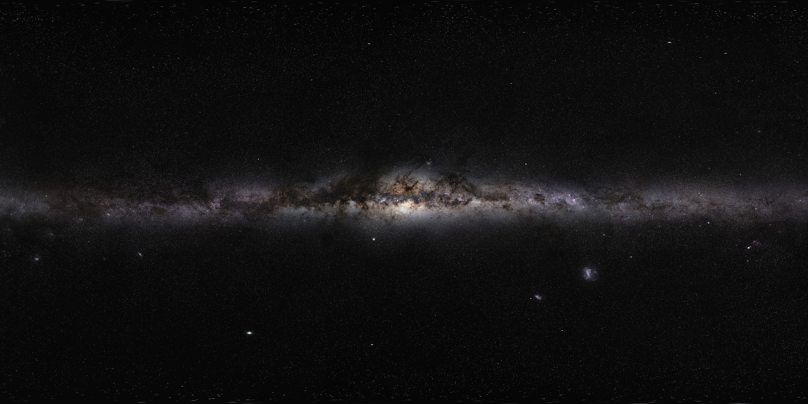

Cargando Imagen Astronómica del Día...
Obteniendo metadatos astronómicos desde el servicio oficial de la NASA...
☄️ Radar de Asteroides Cercanos a la Tierra (NeoWs)
Vigilancia en tiempo real de objetos próximos a la Tierra provista por el equipo Jet Propulsion Laboratory (JPL / NASA).
Cargando telemetría orbital de asteroides...
☀️ Notificaciones y Alertas de Clima Espacial (DONKI)
Monitoreo de eyecciones de masa coronal (CME), llamaradas solares y tormentas geomagnéticas detectadas por satélites SOHO, STEREO y DSCOVR.
Sincronizando con base de datos SWRC...
🪐 Estación Meteorológica Sonda InSight en Marte
Condiciones atmosféricas en Elysium Planitia, Marte (sensores TWINS y barómetro de superficie).
Sintonizando telemetría marciana...
🚀 Patentes y Transferencia Tecnológica de la NASA
Innovaciones científicas y spin-offs espaciales aplicados en los sistemas de navegación, propulsión y soporte vital.
Consultando archivo de patentes NASA...